AI Academy · Level 4 · Grade 9 · Week 27 · Student lesson
Overfitting
Learn to understand, design, build, test and explain AI systems responsibly.
Project: Responsible Plant Classifier
Before you start
Week 24: validation guides model choice, final test evaluates it.
Plan time to read, investigate and explain. Keep predictions separate from observations.
Student lesson · 1 of 14
Your mission
Your learning target
I can compare training and validation evidence for model capacity.
I can explain overfitting without assuming every gap proves it.
I can use a declared selection rule instead of perfect training fit.
Remember before reading
Close your notes first. A rough first answer helps us choose the right starting point; it is not a score for your ability.
Without opening the old lesson, explain one key idea from Reproducible Experiments. Give an example and a mistake that the idea helps you avoid.
Without opening the old lesson, explain one key idea from Train, Validation, Test. Give an example and a mistake that the idea helps you avoid.
Without opening the old lesson, explain one key idea from Absolute Error and MAE. Give an example and a mistake that the idea helps you avoid.
After trying, check the relevant lesson or ask your teacher. Change the part of your explanation that the evidence shows was wrong.
An overfit model captures training-specific noise, producing a large gap between training and unseen performance.
Builder name and experiment date:
Readiness for the connected explanation
Can a zero training error guarantee good validation performance?
This week’s end goal
By the end, I can explain overfitting using a traced example and a stated limitation.
Student lesson · 2 of 14
Notice the evidence
PICTURE ENTRY
Notice → Predict → Explain
Begin with visible evidence; do not explain more than the picture and information support.
Name three visible details without interpreting them.
Predict the data, model, or evaluation decision being made.
Identify one hidden assumption that could change the result.
State what evidence would confirm or reject your prediction.
My prediction and supporting evidence:
A closer explanation
A more flexible model can represent complicated relationships and accidental details. Capacity can help when there is enough relevant evidence, but perfect training performance is not the goal. Compare training and validation using the same metric while checking leakage and representativeness.
Use fictional classroom data throughout this investigation. Keep the task, units, reference labels and data split visible as you reason. Earlier weeks supplied the model-building process; this week examines overfitting and model capacity.
Student lesson · 3 of 14
See how it works
ML MECHANISM
Input → Model → Evidence
Trace the information, fitted behavior, and evaluation proof separately.
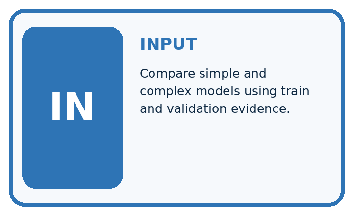
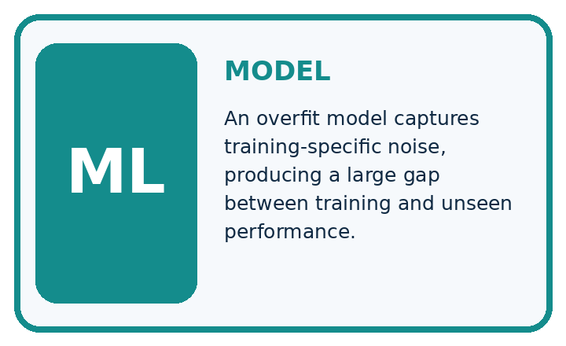
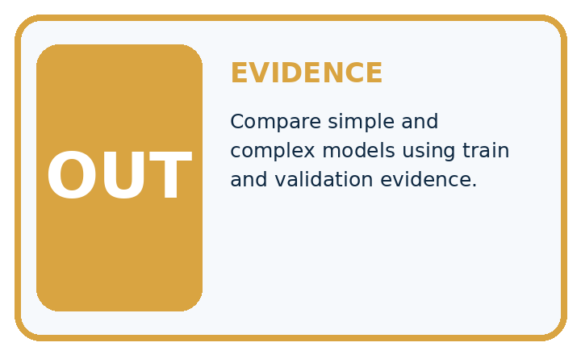
QUESTION Compare simple and complex models using train and validation evidence.
MODEL IDEA An overfit model captures training-specific noise, producing a large gap between training and unseen performance.
PROOF NEEDED Use an unseen case, visible calculation, error analysis, and a stated limitation.
Draw a fresh data → model → prediction → evaluation trace:
A closer explanation
On the same regression split, a constant has training MAE 5 and validation 6, a line has training 2 and validation 3, and a highly flexible curve has training 0 and validation 8. Under smallest validation MAE, choose the line. The curve has the lowest training loss but the worst validation result.
Before continuing, underline the decision rule and circle the evidence that supports the conclusion. Explain the example to a partner without replacing the counts or conditions with a stronger claim. Keep the distinction between an observed result and a proposed next step.
Connect the picture and the explanation
Point to the input, the deciding step and the result in this week’s visual. Explain the same step in ordinary words. A picture helps when you can say what each part represents.
Student lesson · 4 of 14
Compare the cases
EVALUATION DESIGN
Four Tests, Four Kinds of Evidence
A system is not understood until it survives more than one comfortable example.


NORMAL Expected data and expected behavior.
BOUNDARY Value close to a threshold, ambiguous label, or uncertain prediction.
MISSING Necessary field, label, source, or measurement is unavailable.
SHIFTED New lighting, species, device, subgroup, or time condition.
Which case most threatens today's claim, and why?
Change one thing in the pictured case
Change: Large’s validation accuracy rises to82% after a development revision.
Prediction: Its gap is 18 percentage points; it now beats Small on this validation set.
Reason: Validation performance improved, but the training-validation gap is not a complete release rule.
Student lesson · 5 of 14
Words that unlock the idea
VOCABULARY
Words You Can Calculate and Defend
A definition matters when it lets you interpret a new dataset, model, or result.
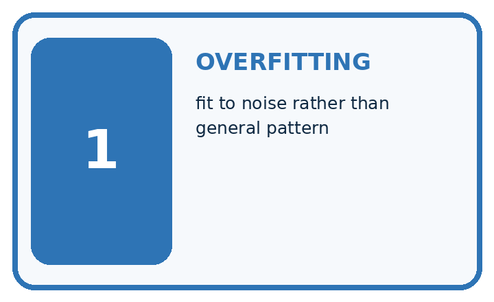
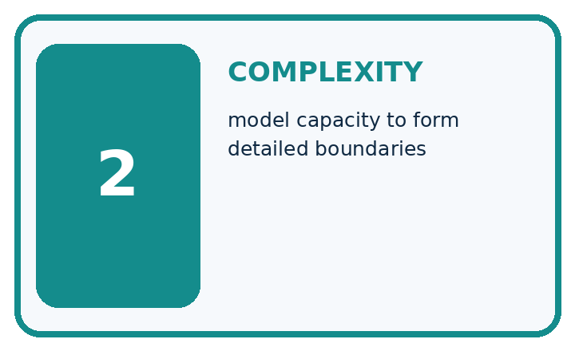
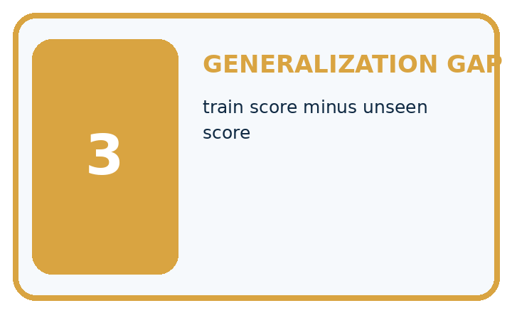
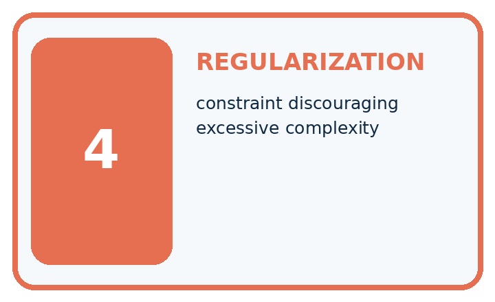
| Term | Precise meaning | My ML example |
|---|---|---|
| overfitting | fit to noise rather than general pattern | |
| complexity | model capacity to form detailed boundaries | |
| generalization gap | train score minus unseen score | |
| regularization | constraint discouraging excessive complexity |
Repair the claim using a definition, calculation, or test record:
Words used in the closer explanation
| Word | Meaning |
|---|---|
| Capacity | Flexibility of a model to represent patterns |
| Overfitting | Learning details that fail to generalize well |
| Underfitting | Failing to capture useful structure |
| Generalization | Performance on relevant unseen examples |
Student lesson · 6 of 14
Follow a worked example
WORKED EVIDENCE
Reason Step by Step
Predict first. Then check each step. A correct answer without visible evidence cannot be audited.
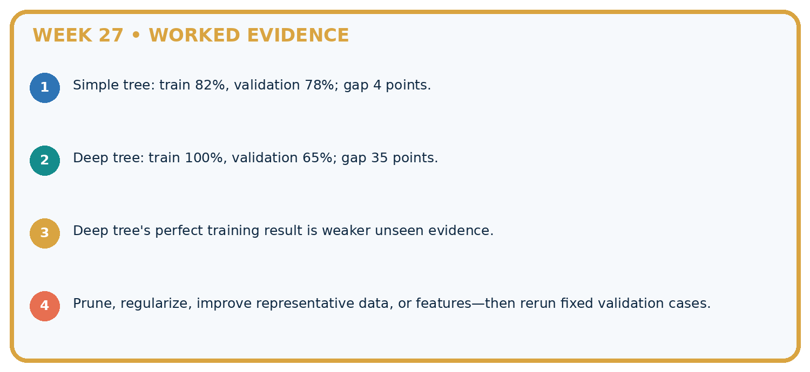
STEP 1 Simple tree: train 82%, validation 78%; gap 4 points.
STEP 2 Deep tree: train 100%, validation 65%; gap 35 points.
STEP 3 Deep tree's perfect training result is weaker unseen evidence.
STEP 4 Prune, regularize, improve representative data, or features—then rerun fixed validation cases.
Recalculate, retrace, or restate the evidence independently:
A closer explanation
Overfitting and model capacity at a glance
Learn from the worked case
Cover the result before checking it. Say what is given, choose the procedure, and follow one step at a time. Then uncover the result and explain your first mismatch. Ask why a step is allowed, not only what number it produces.
A pictorial worked case: Overfitting
See overfitting as a gap requiring investigation, not a label based only on model size.
The facts we will use
Toy model Small: training 85%, validation 80%. Large: training 100%, validation 60%. Same split and scoring rule.
All inputs and outcomes in this worked example are invented classroom data; no real model run is claimed.


Read the picture one step at a time
Why this result follows
Read the picture in order. Check capacity, training choices and data mismatch without tuning on final cases. The arrows show which recorded input or intermediate result each decision uses. Explain the deciding step aloud before checking the changed case; pointing to the final answer alone does not show how it follows.
What this example does not establish
A gap can also reflect data shift or sampling noise. Inspect evidence before attributing every gap to capacity.
Student lesson · 7 of 14
Find and repair a mistake
ERROR DETECTIVE
Compare → Diagnose → Repair
Do not patch the answer. Find the earliest unsupported assumption, data problem, or experiment error.
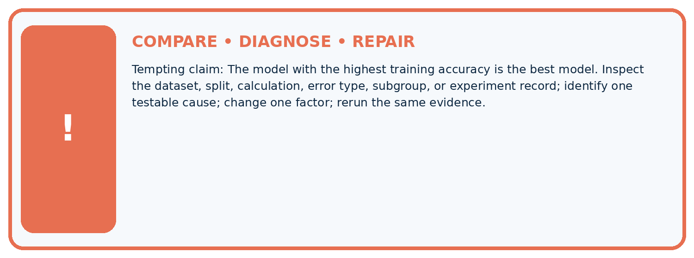
| Evidence record | Expected | Actual | Likely cause / next test |
|---|---|---|---|
| normal case | passes | ||
| boundary case | defined behavior | ||
| missing case | safe fallback | ||
| shifted case | measured limit |
Diagnose one cause and name the cleanest next experiment:
A closer explanation
A simpler model is not always better. If a flexible candidate has better valid evidence under the declared rule, keep that evidence visible. Model capacity is one part of an experiment, alongside features, sample size, label quality and the split.
Student lesson · 8 of 14
Practise together
ML STUDIO
Specify Before You Run
A trustworthy result can be reproduced from the recorded data, code, settings, and evaluation rule.

Experiment record
QUESTION + intended use + success threshold
DATA version + grouped split + leakage check
CODE/preprocessing + features + model + settings + seed
METRICS + positive class + units + denominators
PREDICTIONS + errors + subgroup slices + limitations
HUMAN reviewer + release, revise, limit, or stop decision
Write the minimum record needed to reproduce today's result:
A closer explanation
Change one development factor at a time: simplify the candidate, improve data coverage or adjust a declared regularization setting. Refit on training and compare on validation. Do not remove difficult valid examples or repeatedly search the test for a favorable result.
Practise with less help: Interpret a gap
Use workbook W2 for the connected example “Overfitting and model capacity”. First fill the input and rule boxes. Try the middle steps before asking for a hint. After a hint, try the next step yourself.
| Plan | Do | Check |
|---|---|---|
| What is given? Which rule or procedure applies? | Record each intermediate step. | Does the result follow? What remains unknown? |
Explain your trace to a partner. Your partner points to one step to check. Swap roles on the next case. Each person writes their own explanation.
Check your reasoning
Use the worked case for Overfitting and model capacity. Proposed explanation: “A final answer is enough”. Decide whether this explanation is supported. Point to the step or supplied fact that decides; explain your repair if needed.
Answer on your own before discussion. If you are unsure, say which step you need help with.
Explain the picture
Does100% training accuracy prove Large was always best? Point to the relevant step in the picture, then write the changed result and the rule or evidence that supports it.
This is supported practice. Keep the separately named independent case for an attempt before feedback.
Student lesson · 9 of 14
Run the investigation
EVIDENCE LAB
Predict → Run → Calculate → Interpret
Keep the test conditions fixed, record every result, and change only one planned factor.
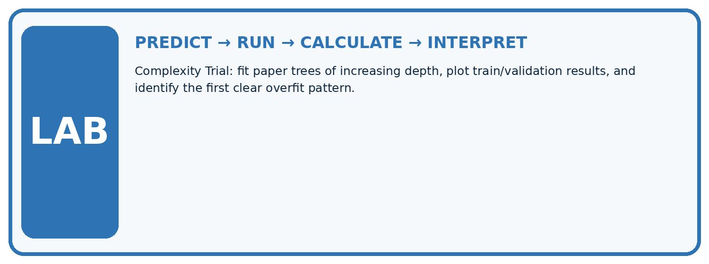
1. Write the hypothesis and expected evidence before running.
2. Complexity Trial: fit paper trees of increasing depth, plot train/validation results, and identify the first clear overfit pattern.
3. Run one normal, one boundary, one missing, and one shifted case.
4. Calculate the metric from raw counts or row-level errors.
5. Interpret what changed, what did not, and what remains unsafe or unknown.
| Case | Prediction | Actual | Calculation / evidence | Meaning / next test |
|---|---|---|---|---|
| Normal | ||||
| Boundary | ||||
| Missing | ||||
| Shifted |
Plan → try → check
Before trying: what do I expect, and why? While trying: which step could first go wrong? Afterwards: what did I actually observe, and what should change? Keep “not run” if you only traced the procedure.
Student lesson · 10 of 14
Build your understanding
MASTERY
From Knowing the Word to Owning the Idea
Move upward only when you can produce evidence without copying the example.

DEFINE Use all four terms precisely: overfitting, complexity, generalization gap, regularization.
CALCULATE Reproduce the worked evidence with units and denominator.
TRACE Explain the data, code or decision path.
DIAGNOSE The model with the highest training accuracy is the best model.
TRANSFER Solve a fresh dataset or model case.
IMPROVE Change one cause and rerun fixed evidence.
DEFEND State intended use, metric, limitation, and human responsibility.
Student lesson · 11 of 14
Connect your project
CUMULATIVE PROJECT
Responsible Plant Classifier
Every week adds one reviewable artifact to the same evidence-based capstone.
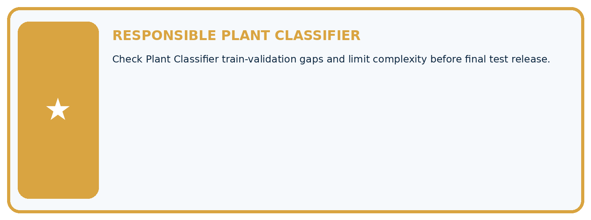
Which requirement or risk does this artifact address?
Which dataset, split, code, and metric version does it use?
What normal and shifted cases were tested?
What remains uncertain or weak?
What decision still belongs to a teacher or qualified human?
My evidence-linked project decision:
Evidence for your project
For your Responsible Plant Classifier, save the input, procedure, observed result and limitation of this check. Label this worked example as practice; use a different, previously unreviewed case when checking independent understanding.
Student lesson · 12 of 14
Show what you know
INDEPENDENT PROOF
Explain • Calculate • Transfer • Defend
Complete this with a fresh case after guided practice and compare it with the mastery criteria.
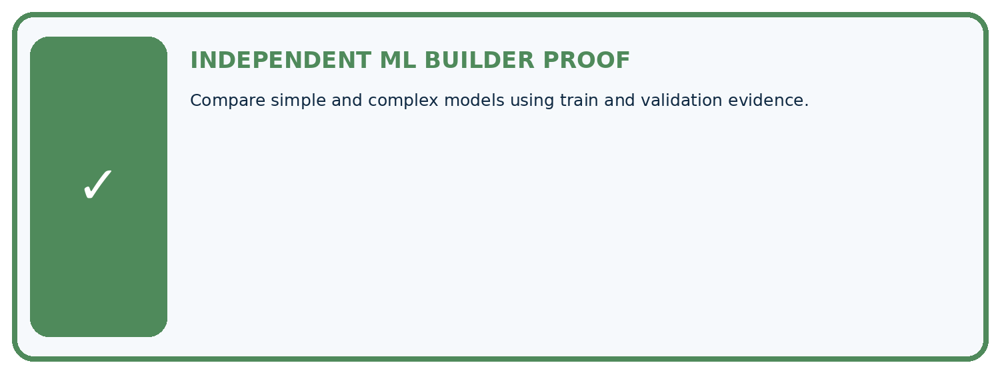
□ Define the task, feature/target roles, and intended-use boundary.
□ Show the calculation, code trace, or experiment record.
□ Test a normal case and one revealing boundary, missing, or shifted case.
□ Diagnose one failure without changing several factors at once.
□ Name a limitation, fairness concern, and the human-review action.
Independent evidence and defense:
My level: □ Not yet □ With one hint □ Independently □ I can teach and defend it
Student lesson · 13 of 14
Study a complete case
Week 27 Worked case
Use the supplied details to practise the weekly concept before attempting the independent question. This case extends the illustrated lesson.
The situation
A scores100% train,60% validation; B scores85%,80% on the same sets.
The question
Compute gaps and select by validation accuracy.
Worked explanation
A gap40 percentage points; B gap5. B has better shared validation accuracy. A suggests overfitting, but investigate distribution differences too.
Explain it in your own words
Which detail supports the answer, and why does it matter?
Trace the supplied case visually
Compare training and shared validation
| Evidence or stage | Value or result |
|---|---|
| A training | 100 |
| A validation | 60 |
| B training | 85 |
| B validation | 80 |
A scores100% train,60% validation; B scores85%,80% on the same sets.
Compute gaps and select by validation accuracy.
A gap40 percentage points; B gap5. B has better shared validation accuracy. A suggests overfitting, but investigate distribution differences too.
Student lesson · 14 of 14
Try a new case independently
Independent case: Changed independent case
Model A training96%, validation62%; model B training88%, validation79%. Compare gaps and choose a development candidate, assuming the same valid evaluation conditions.
Attempt this case before feedback. Record any help. Earlier examples below are further practice; a case already practised with feedback cannot establish fresh transfer.
Week 27 Independent application
Close the worked explanation. Apply the idea to this different question without copying.
Model A has training accuracy 99% and validation accuracy 70%; B has 88% and 84%. Compute each gap and discuss the evidence.
My answer, with a trace, calculation or supporting evidence
Create and test
Change one relevant detail. Predict the result before testing. Include a boundary or missing-information case when it helps reveal a limit.
My changed input and expected result
Connect to your project
Check Plant Classifier train-validation gaps and limit complexity before final test release.
The evidence I will keep
Your teacher has the independent answer and scoring criteria. Complete the matching workbook week to keep your practice evidence together.
Transfer practice from the original programme
A has training 98%, validation 58%; B has training 86%, validation 81%. Compute gaps and select a candidate with a qualification.
Use feedback to improve
Attempt the independent case before hints. Record whether you worked alone, used a hint or followed a model. After feedback, fix the first unsupported step and explain why it changed. A later check uses a changed case, not a copied answer.